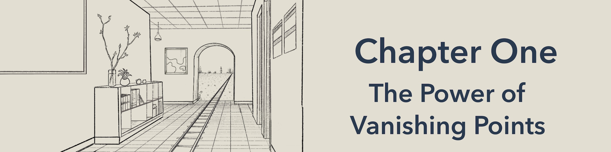

# The Geometry of Vision

## Lecture 1: Why do images of parallel lines converge?
Intro text.
Video 1A.
Intro text.
Video 1B.
Intro text.
Video 1C.
Intro text.
Video 1D.
Intro text.
Video 1E.
Intro text.
Video 1F.
## Lecture 2: Solving Puzzles with Vanishing Points
## Lecture 3: How to Use Vanishing Points to Draw in Perspective